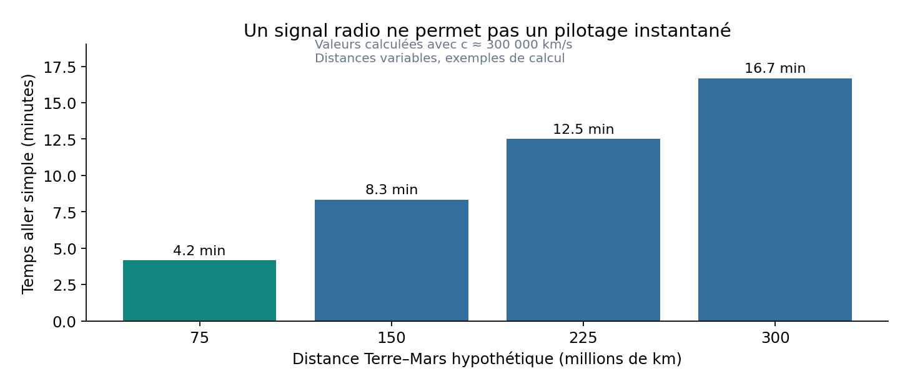
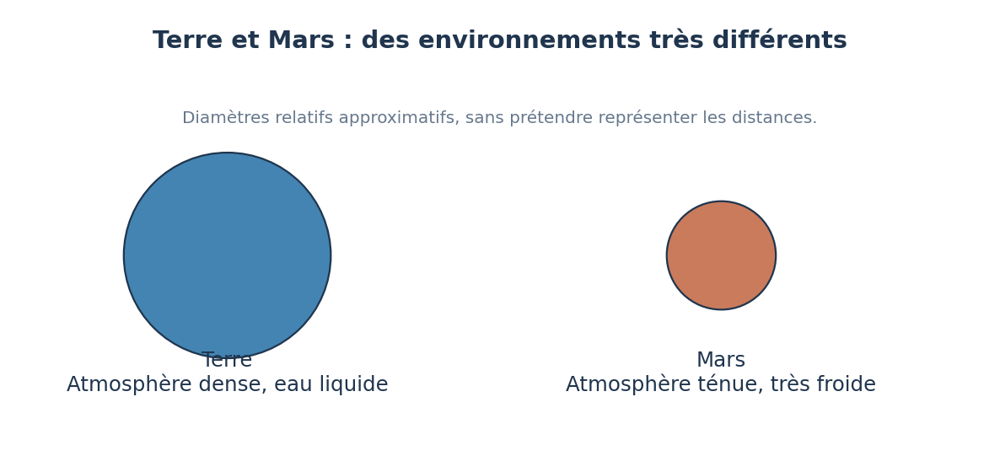
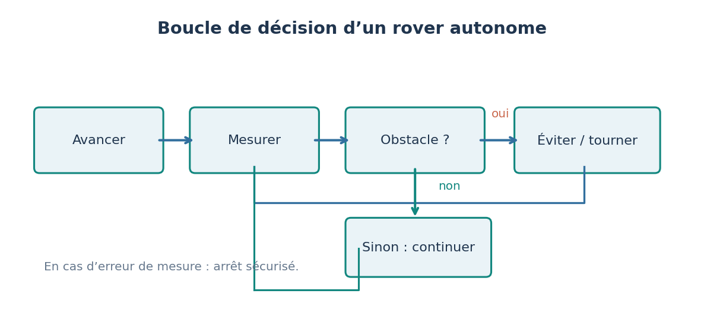

Technologie · Cycle 4 · en lien avec la physique-chimie, la SVT et les mathématiques
Comment explorer Mars sans pilote ? Construire un rover autonome
Mars, délais de communication et robotique autonome
✦ 10 séances◷ 55 min par séance◉ En vigueur en 3e depuis la rentrée 2026

🔒 Dossier enseignant : comment aborder cette séquence
Ce que je vais apprendre
Question de départ : Comment un robot peut-il décider seul de contourner un obstacle sur une planète où chaque ordre met plusieurs minutes à arriver ?
Rédiger un cahier des charges avec des exigences mesurables.
Caractériser une chaîne d’information et la circulation d’une donnée jusqu’à Internet.
Concevoir un algorithme, le traduire en programme structuré avec une interaction humain-machine.
Valider par une campagne d’essais, formuler des hypothèses de dysfonctionnement et réparer.
LES CONNAISSANCES
3 questions scientifiques
Chaque question s’appuie sur une observation, une expérience ou des données, puis sur un modèle dont on dit les limites.
QUESTION 01
En quoi Mars diffère-t-elle de la Terre ?

Diamètres à la même échelle ; les distances ne sont pas représentées.
À retenir
Mars est une planète rocheuse froide, poussiéreuse, à l’atmosphère très mince. Un rover doit y résister au froid, à la poussière, au terrain et disposer d’une source d’énergie adaptée.
Expérience : Extraire des valeurs d’une fiche NASA et en déduire trois contraintes pour un rover.
Pourquoi ne pilote-t-on pas un rover martien en temps réel ?
À retenir
Un signal met plusieurs minutes pour aller de la Terre à Mars, car la distance est immense et la vitesse de la lumière finie. Ce délai varie avec la position des planètes. Un rover doit donc réagir seul aux situations immédiates.
Expérience : Calculer la durée de propagation pour plusieurs distances Terre-Mars, puis l’aller-retour.
Comment un robot détecte-t-il et évite-t-il un obstacle ?

Boucle de décision du rover, avec un arrêt de sécurité si la mesure est impossible.
À retenir
Un rover autonome acquiert des données avec ses capteurs, les traite avec un programme qui compare les mesures à des seuils, et agit avec ses moteurs. Sa fiabilité se prouve par des essais répétés et mesurés.
Expérience : Tester plusieurs seuils d’arrêt et mesurer le taux de réussite sur plusieurs parcours.
Concevoir, programmer et valider un rover miniature autonome
Une mission robotisée doit explorer une zone de Mars. Chaque ordre envoyé depuis la Terre met entre 3 et 22 minutes à arriver : le rover doit éviter seul les obstacles.
Mission : Concevoir, construire et programmer un rover miniature qui démarre sur commande, avance sur un terrain inconnu, s’arrête avant les obstacles et les contourne, puis prouver sa fiabilité par une campagne d’essais.
Contraintes
vitesse limitée à 20 cm/s pour préserver le matériel et les élèves
distance minimale à un obstacle détectable : au moins 10 cm
taux de réussite d’au moins 80 % sur 20 essais (4 parcours inconnus × 5 essais)
programme structuré en sous-programmes, démarrage et arrêt par boutons
trace des mesures conservée pour au moins un essai
autonomie énergétique mesurée (durée de fonctionnement sur une charge)
basse tension, sans émission radio à longue portée
Production finale : Rover et programme commenté, algorigramme, chaînes d’information et d’énergie, tableau d’essais, dossier de revue de projet.
La mission est réussie si…
Au moins 16 réussites sur 20 essais.
Aucune distance minimale inférieure à 10 cm sur les obstacles détectables.
Le dossier explique un dysfonctionnement rencontré, sa cause et la correction.
INTERDISCIPLINARITÉ
Ce que l’on travaille aussi dans les autres disciplines
Discipline
Lien
Séances
Physique-chimie
Vitesse de la lumière, durée de propagation ; vitesse du son (capteur à ultrasons) ; poids et pesanteur sur Mars.
Séances 1, 2, 5
SVT
Conditions de la vie, recherche de traces de vie passée sur Mars.
Séance 1
Mathématiques
Proportionnalité, puissances de 10, statistiques sur une série d’essais, algorithmique.